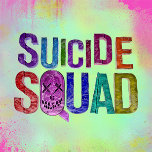

Figuring they're all expendable, a U.S. intelligence officer decides to assemble a team of dangerous, incarcerated supervillains for a top-secret mission. Now armed with government weapons, Deadshot (Will Smith), Harley Quinn (Margot Robbie), Captain Boomerang, Killer Croc and other despicable inmates must learn to work together. Dubbed Task Force X, the criminals unite to battle a mysterious and powerful entity, while the diabolical Joker (Jared Leto) launches an evil agenda of his own.
Suicide Squad premiered in New York City on August 1, 2016, and was released in the United States on August 5, 2016, in 2D, 3D and IMAX 3D. Following a strong debut that set new box office records, the film has grossed over $700 million worldwide. It received mostly negative reviews from critics, who found the directing and plot muddled and choppy and the characters thinly-written, though Margot Robbie's performance generally-received praise.
Filming began on April 13, 2015. On April 26 and 27, filming was to take place at the Hy's Steakhouse. A "snowstorm" scene was filmed on April 29 on the Adelaide St. and in Ching Lane. On May 5, a few major scenes were filmed in downtown Toronto next to Yonge and Dundas Square. Principal photography wrapped in August 2015 after additional filming took place in Chicago, Illinois. Additional filming ensued in 2016 following Warner's desire to make a more lighthearted and comedic tone akin to the trailers, specially as Batman v. Superman: Dawn of Justice was criticized for being too somber. It was also confirmed that Zack Snyder filmed the Flash scene. Ayer confirmed that the film was completed on June 24, 2016. Despite the involvement of multiple editors into the process, only John Gilroy is credited. In August 2016, Jared Leto revealed many of his scenes were cut from the film.